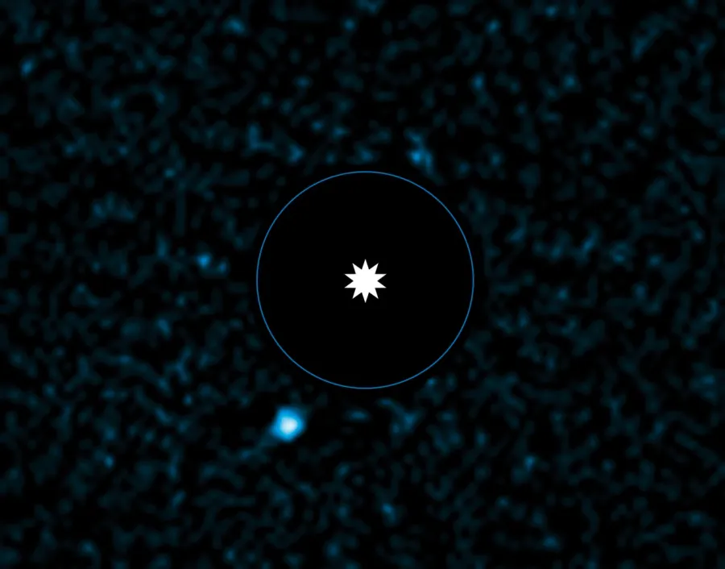

June 3, 2013
Direct image of the exoplanet HD 95086 b
Using the NACO instrument on ESO's Very Large Telescope, astronomers imaged a faint dot next to the young star HD 95086 that moves across the sky together with the star. In the image the star was removed during processing and its position is marked; the planet appears at the lower left. For scale, the blue circle marks how large Neptune's orbit is.
Its brightness indicates an estimated mass of four to five Jupiter masses – according to ESO at the time, that would make it the least massive exoplanet directly observed. It orbits the star, some 300 light-years away, at about 56 times the Earth–Sun distance.
Sources: ESO: "Lightest Exoplanet Imaged So Far?" (eso1324)., 2013-06-03; ESO: "VLT image of exoplanet HD 95086 b" (image eso1324a)., 2013-06-03